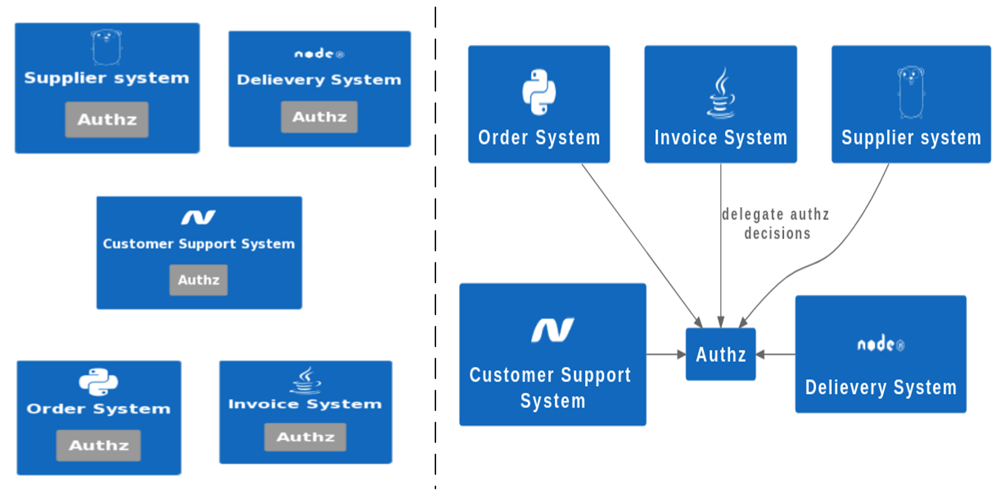
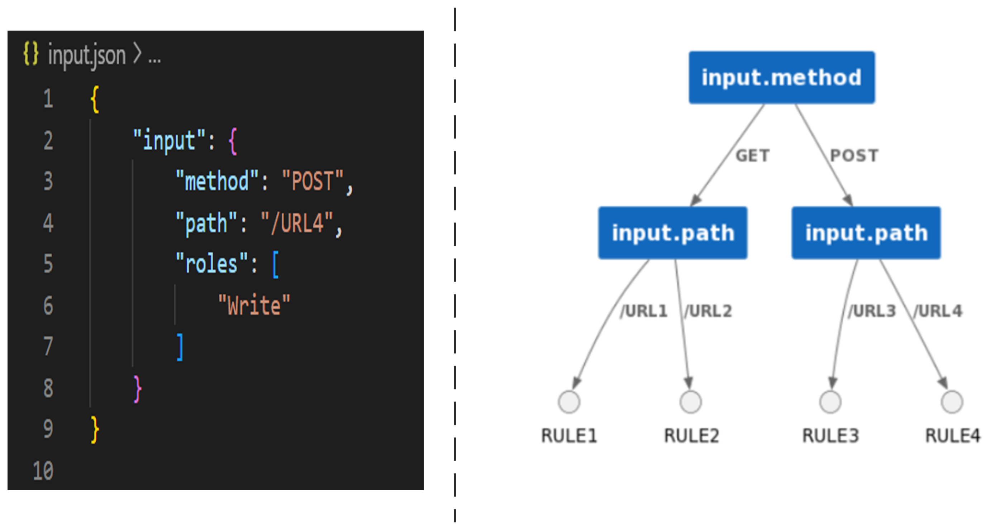
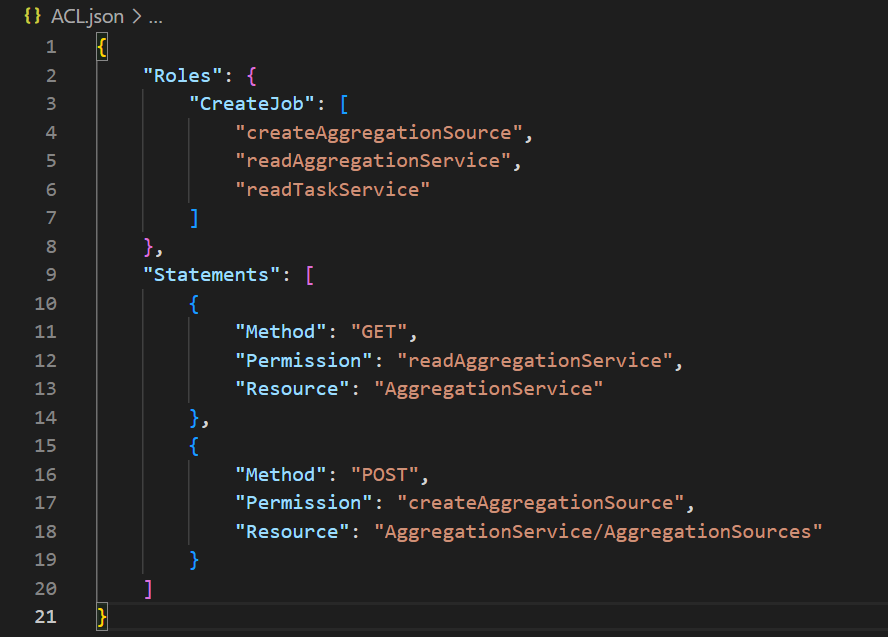
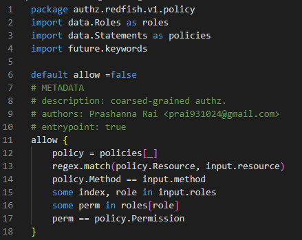
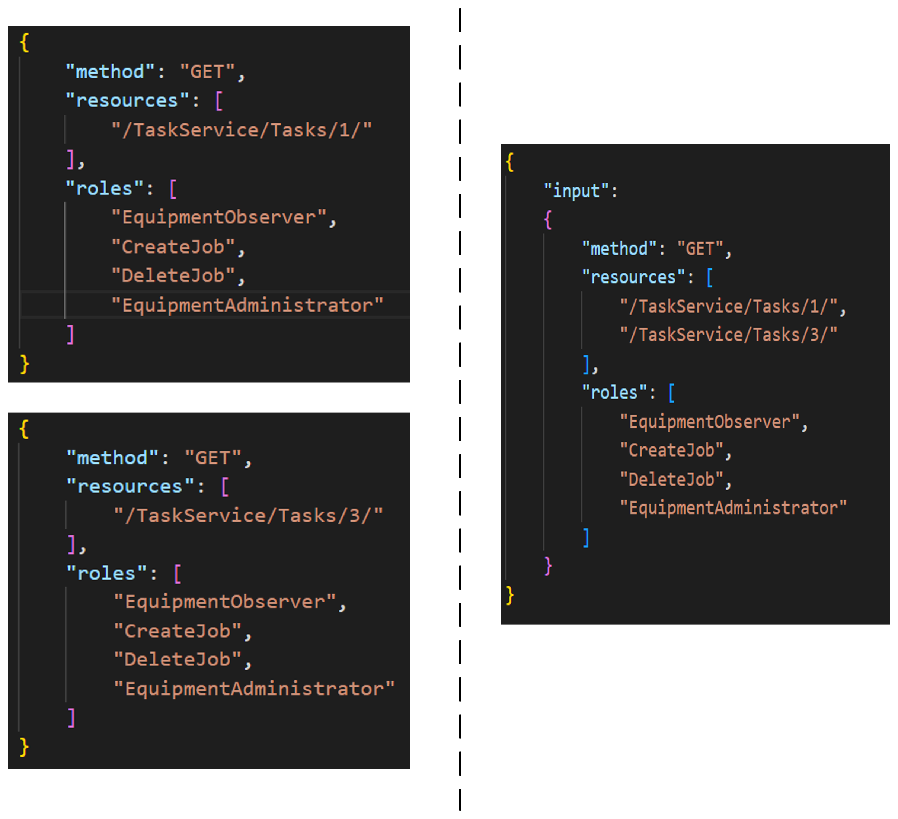
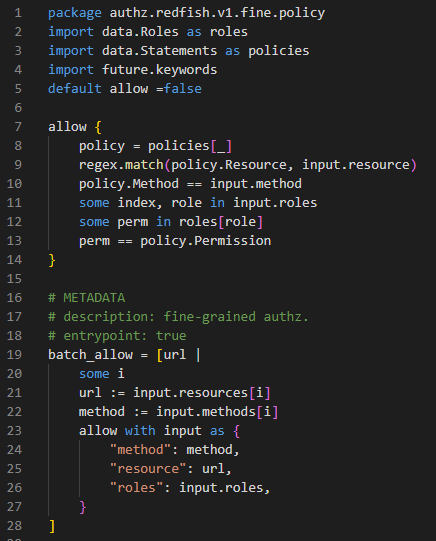
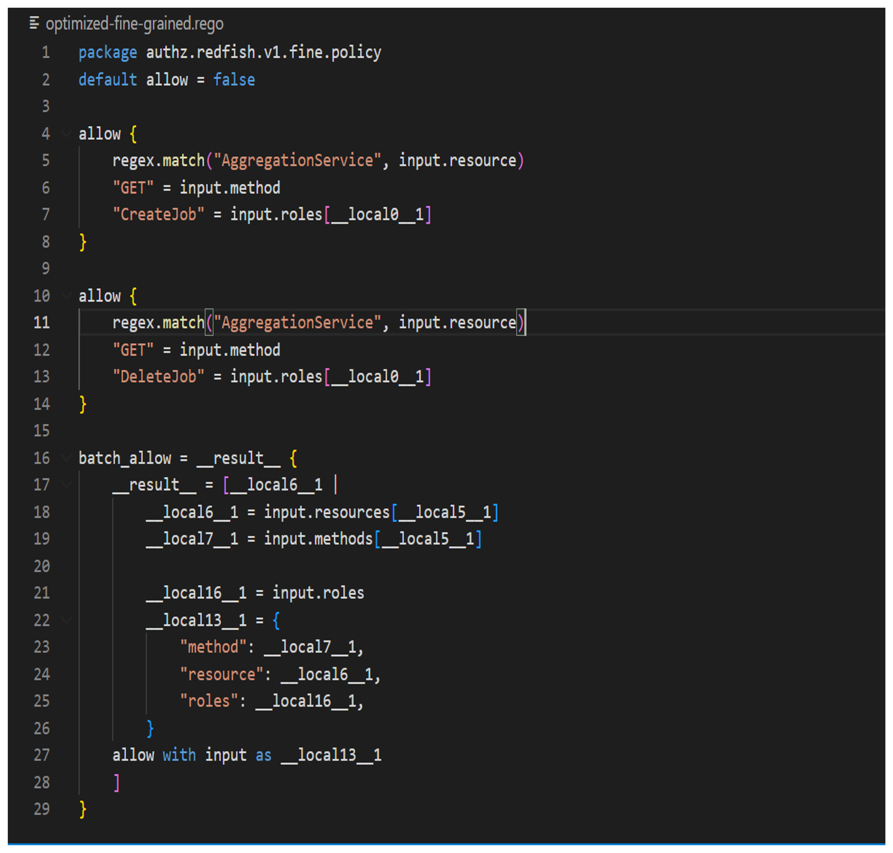
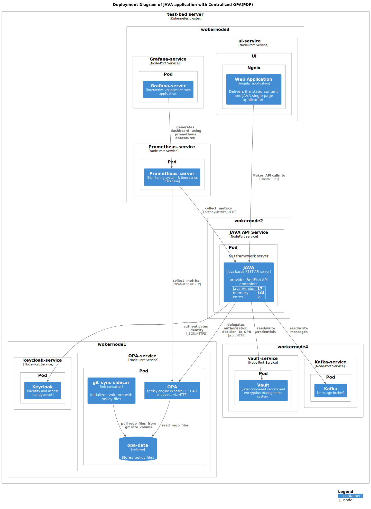
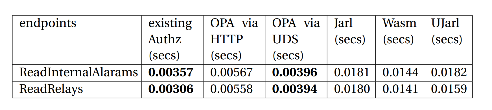
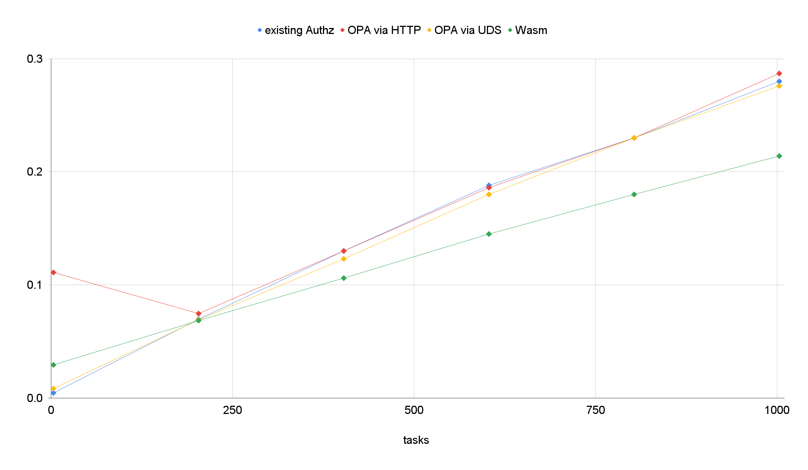

Cloud native authorization
Cloud native
is an approach which enables to develop application which are autoscale, vendor-agnostics applications, and Self-managed deployment and healing.
Authorization
is process of making decisions to authenticated users should be allowed to execute operations
Coarse-grained Authorization
Fine-grained Authorization
Cloud native authorization Problem
offload the authorization logic from microservice and only enforce decision into system
Open Policy Agent (OPA)
OPA is CNCF graduated project, domain agnostic, general purpose policy engine
versatility of OPA
Rego language
- declarative language
- domain specific language
- no any library is need to use JSON/YAML file or to create REST API server
- no any library is need to decoding JWT token or making HTTP Request
- provides index supported statements for performance
Example OF REGO
rule-indexing
investigation aspects of OPA into System
- Java based application
- contains coarse-grained and fine-grained authorization
- contains ACL file as JSON file
- application uses Role-based access control (RBAC)
Exisiting structure of Access-control List
Exisiting Access-control List Size
- more than 150 rules
- 68 different permissions and 7 different roles
Solution of coarse-grained authz with unoptimized version of rego
Solution of coarse-grained authz with optimization flag=2
problem with fine-grained authz
- it needs to filter all the datas that was collected during operations before sending response
approaches with fine-grained authz
Solution of fine-grained authz with unoptimized version of rego
Solution of fine-grained authz with optimization flag=2
implementation within Java application
- REST API via HTTP
- REST API via Unix Domain Socket
- Jarl library that uses Intermediate file
- use of library that executes Wasm binaray inside JVM
implementation details with OPA
Centralized integration approach within JAVA application
measurements of latency with Prometheus
- Summary metrics is generated when execution starts from ContainerRequestFilter(Prefilter) of Grizzly server i.e when HTTP request is receieved on server
- Summary metric is reported back to registry when execution starts exits from ContainerRequestFilter(PostFilter) of Grizzly server i.e when HTTP request is processed and HTTP response is created
- Summary metric contains total time to process HTTP request and create HTTP response
- promql to get average latency
Performance of read Relays API

Performance of read InternalAlarams API

Performance of API that uses coarse-grained authz
Analysis
- Among all the approaches, Unix Domain Socket based implementation has lower overhead
- But, Unix Domain Socket based integration is 10% slower than exisiting implementation
- But, HTTP based integration is 58% slower than exisiting implementation
- Jarl based integration was 407% slower than existing implementation
- Wasm based integration was 303% slower than existing implementation
Performance of Read TaskCollection API
Analysis
- Old implementation uses lot of iteration to filter out datas before sending response
- Wasm-time uses JIT compiler that might have use loop unrolling for large interations
Conclusion
- Distributed OPA i.e. implementation based on OPA Engine as a Sidecar Container had a faster response in the case of coarse-grained authorization REST API compared to Centralized OPA.
- Distributed OPA i.e. implementation based on Wasm Binary had a faster response in the case of fine-grained authorization REST API compared to the original JAVA service.
Conclusion
- In a large microservices-based ecosystem, the Distributed OPA approach will occupy more resources than compared to Centralized OPA.
- In the case of Centralized OPA, the loss of OPA will affect the availability of the applications that are using OPA but in the case of a distributed OPA approach, OPA and application co-exist so the applications become highly available.